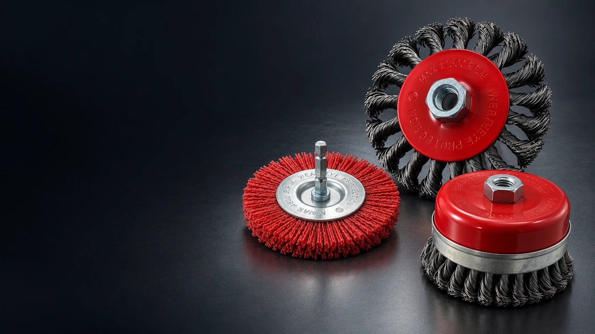
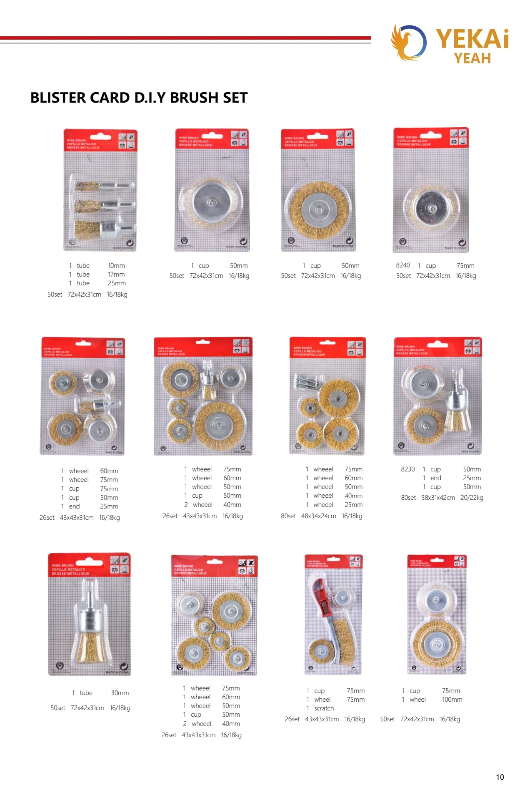

Choose your range
Share your products, dimensions, materials and expected quantities.

Direct from the manufacturerOne partner. A complete brush range.
Built around your businessProduct, branding and packaging options.
Ready for international tradeFor importers, distributors and wholesalers.

We are YeKai, a manufacturer of wire brushes and abrasive tools based in Yongkang, China. Our range brings together wire wheels, abrasive filament brushes, cup brushes and flap discs for international markets.
From selecting the wire to preparing your packaging, we work with you to define the product your customers need.
Explore our assessment documents, test report and patent certificates. Refer to each document for its covered models and scope.
A closer look at our exhibition booth, product displays and conversations with visitors.
Talk with Frank ↗Build a product range with your name on it. From double-blister packs to color boxes and brush sets, let’s find the presentation that fits your market.
Discuss an OEM project ↗
Share your products, dimensions, materials and expected quantities.
Review samples, packaging, pricing and shipping with Frank.
Confirm your specifications and agreed terms before production.